LA IGLESIA TRIUNFANTE
El siglo XIII
Acabamos de comparar el arte del período románico con el de Bizancio e incluso con el del antiguo Oriente. Pero hay un aspecto en el cual este último se diferencia profundamente de aquél. En Oriente los estilos duraron milenios, y no parecía existir razón alguna por la que debieran cambiar. Occidente jamás conoció esta inmovilidad; siempre estuvo inquieto, intentando soluciones nuevas y nuevas ideas. El estilo románico no se prolongó más allá del siglo XII. Apenas habían conseguido los artistas abovedar sus iglesias y distribuir sus estatuas de forma nueva y majestuosa, cuando otra idea hizo que todas esas iglesias románicas y normandas parecieran vulgares y anticuadas. Esta idea nueva nació en el norte de Francia y constituyó el principio del estilo gótico. Al pronto, puede considerársela principalmente como una innovación técnica, pero llegó mucho más allá en sus efectos. Fue el descubrimiento de que el método de abovedar las iglesias por medio de vigas cruzadas podía ser desarrollado mucho más consecuentemente y con más amplios propósitos que los imaginados por los arquitectos normandos. Si era cierto que los pilares bastaban para sostener las vigas de la bóveda, entre las cuales las piedras restantes eran simple relleno, entonces los muros macizos existentes entre pilar y pilar eran en realidad superfluos. Era posible levantar una especie de andamiaje pétreo que mantuviera unido el conjunto del edificio. Lo único que se necesitaba eran delgados pilares y estrechos nervios; lo demás entre unos y otros podía suprimirse sin peligro de que el andamiaje se hundiera. No se necesitaban pesados muros de piedra; en su lugar podían colocarse amplios ventanales. El ideal de los arquitectos se convirtió en edificar iglesias casi a la manera como se construyen los invernaderos. Solamente que carecían de estructura de hierro y de vigas de acero, y, por lo tanto, tenían que hacerla de piedra, lo que requería gran cantidad de minuciosos cálculos. Pero una vez conseguido que tales cálculos fueran correctos, resultaba posible construir una iglesia de un tipo enteramente nuevo; un edificio de piedra y de cristal como nunca se había visto hasta entonces. Esta es la idea que presidió la creación de las catedrales góticas, desarrolladas en el norte de Francia en la segunda mitad del siglo XII.
Naturalmente, el principio de las vigas cruzadas no era bastante por sí solo para producir este estilo revolucionario de la arquitectura gótica. Fue necesario cierto número de otras invenciones técnicas para que el milagro pudiera realizarse. Los arcos redondos del estilo románico, por ejemplo, resultaron inadecuados para los fines de los arquitectos góticos. Y ello por la razón siguiente: si nos proponemos salvar la distancia entre dos pilares con un arco semicircular, sólo podemos hacerlo de una manera, alcanzando la bóveda a determinada altura, ni mayor ni menor. Si deseamos hacerla más alta, tenemos que hacer el arco más empinado. Lo mejor, en este caso, es descartar el arco semicircular y lograr que dos segmentos de arco se encuentren en un punto. Ésta es la idea a que responden los arcos apuntados. Su gran ventaja es que se los puede variar a voluntad, haciéndolos más chatos o puntiagudos de acuerdo con las exigencias de la estructura.
Otro aspecto más ha de tenerse en cuenta. Las pesadas piedras de la bóveda no presionan solamente de arriba abajo, sino también hacia los lados, a la manera de un arco puesto en tensión. Los pilares solos no bastaban para resistir esta presión lateral, por lo que resultaron necesarios sólidos contrafuertes que mantuvieran el conjunto de la estructura. En las bóvedas de las alas esto no resultaba muy difícil, ya que los contrafuertes podían construirse por la parte de fuera; pero ¿cómo hacerlo para la nave central? Esta tenía que ser aguantada desde el exterior a través de los tejados de las alas. Para ello, los arquitectos introdujeron los arbotantes, que completaron el andamiaje de la bóveda gótica (ilustración 122). Una iglesia de este estilo parece quedar suspendida entre esas finas estructuras de piedra, como la rueda de una bicicleta entre sus débiles radios. En ambos casos es la propia distribución del peso la que permite reducir cada vez más el material necesario para la construcción, sin dañar la solidez del conjunto.
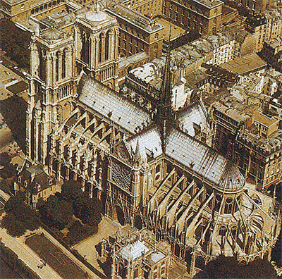
122 Catedral de Notre-Dame de París, 1163-1250. Vista aérea que muestra su planta cruciforme y los arbotantes.
Sería equivocado, no obstante, considerar principalmente estas iglesias como proezas ingenieriles. Los artistas procuraron que percibiéramos y admiráramos el atrevimiento de su empresa. Contemplando un templo dórico (ilustración 50) notamos la función desempeñada por la hilera de columnas que sostienen el peso del techo horizontal. En el interior de una catedral gótica (ilustración 123) se nos hace comprensible el complejo juego de fuerzas que sostiene en su sitio a la elevada bóveda. Allí no existen muros compactos ni macizos pilares en parte alguna. El conjunto del interior parece entretejido de flechas y vigas sutiles; su red cubre la bóveda y se desliza a lo largo de las paredes de la nave para ser recogida por los pilares que forman como haces de varillas de piedra. Hasta los ventanales están distribuidos en medio de esas líneas entrelazadas, conocidas con el nombre de tracería (ilustración 124).
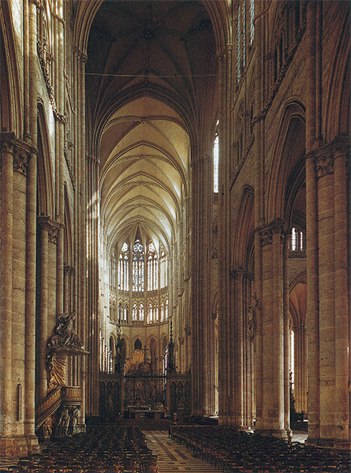
123 Robert de Luzarches. Nave de la catedral de Amiens, h. 1218-1247. Interior gótico.
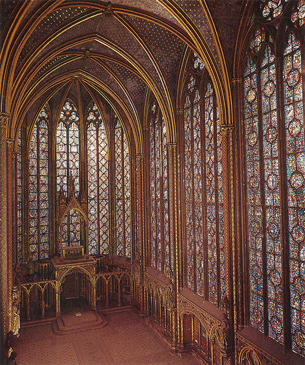
124 Sainte-Chapelle, París, 1248. Vidrieras góticas.
Las grandes catedrales, iglesias episcopales (cathedra = sede del obispo) de finales del siglo XII y principios del XIII, fueron concebidas en tan atrevida y magnificente escala que pocas, si es que hubo alguna, se concluyeron exactamente como habían sido planeadas. Mas con todo, y tras las muchas alteraciones que tuvieron que sufrir con el curso del tiempo, sigue proporcionando una experiencia inolvidable penetrar en esos vastos interiores cuyas dimensiones parecen empequeñecer todo lo simplemente humano y minúsculo. Apenas podemos imaginar la impresión que esos edificios debieron causar en quienes sólo habían conocido las pesadas e inflexibles estructuras del estilo románico. Esas iglesias más antiguas, en su solidez y fuerza, pudieron expresar algo de la Iglesia militante que ofrecía protección contra los ataques del mal. Las nuevas catedrales proporcionaban a los creyentes un reflejo del otro mundo. Habrían oído hablar en himnos y sermones de la Jerusalén celestial, con sus puertas de perlas, sus joyas inapreciables, sus calles de oro puro y vidrio transparente (Apocalipsis 21). Ahora, esa visión descendió del cielo a la tierra. Las paredes de esos edificios no eran frías y cerradas. Se hallaban formadas de vidrios coloreados que brillaban como una piedra preciosa. Los pilares, nervios y tracerías se realzaban con oro. El fiel que se entregase a la contemplación de toda esta hermosura sentiría que casi había llegado a comprender los misterios de un reino más allá del alcance de la materia.
Hasta cuando se miran de lejos, estas construcciones maravillosas parecen proclamar las glorias del cielo. La fachada de Notre-Dame de París es, tal vez, la más perfecta de todas ellas (ilustración 125). Tan diáfana y sin esfuerzo aparente es la distribución de pórticos y ventanales, tan flexible y gracioso el trazado de las galerías, que nos olvidamos del peso de este monte de piedra, pareciendo elevarse el conjunto de la estructura ante nuestros ojos como un espejismo.
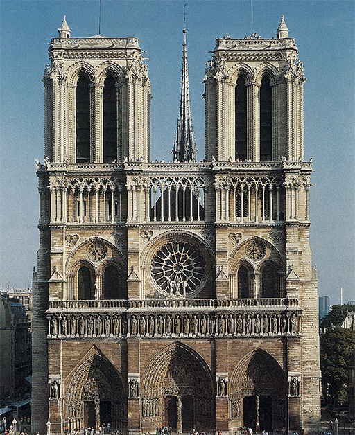
125 Catedral de Notre-Dame de París, 1163-1250. Catedral gótica.
Existe un sentimiento análogo de luminosidad e ingravidez en las esculturas que como huéspedes celestiales flanquean los pórticos. Mientras que el maestro románico de Arlés (ilustración 115) hizo figuras de santos que parecen sólidos pilares firmemente encajados en la armazón arquitectónica, el maestro que trabajó para el pórtico norte de la catedral gótica de Chartres (ilustraciones 126 y 127) dio vida a cada una de las suyas. Parecen moverse, mirarse entre sí, solemnes; la disposición de sus vestiduras indica nuevamente que hay un cuerpo debajo de ellas. Cada figura está señalada claramente por un símbolo que debía ser reconocible para todo el que conociera el Antiguo Testamento. No resulta difícil reconocer a Abraham en el viejo que sostiene a su hijo delante de sí dispuesto al sacrificio. Reconocemos también a Moisés porque sostiene las tablas en las que fueron inscritos los diez mandamientos, así como la columna con la serpiente de bronce que le sirvió para sanar a los israelitas. El que está al otro lado de Abraham es Melquisedec, rey de Salem, de quien leemos en la Biblia (Génesis 14, 18) que fue «sacerdote del Dios Altísimo» y que «presentó pan y vino» para dar la bienvenida a Abraham después de triunfar en la batalla. En la teología medieval fue considerado por este motivo como modelo del sacerdote que administra los sacramentos, y por ello está señalado con el cáliz y el incensario sacerdotal. De este modo, casi cada una de las figuras que llenan los pórticos de las grandes catedrales góticas está claramente señalada con un emblema para que su sentido y su mensaje fueran comprendidos y meditados por el creyente. En conjunto, forman como una completa corporización de las enseñanzas de la Iglesia, tratadas ya en el capítulo precedente. Y sin embargo, advertimos que el escultor gótico ha emprendido su tarea con nuevo espíritu. Para él, esas estatuas no son sólo símbolos sagrados, solemnes evocaciones de una verdad moral, sino que cada una de ellas debió ser una figura válida por sí misma, distinta de su compañera en su actitud y tipo de belleza, para lo cual revistió a cada una de dignidad individual.
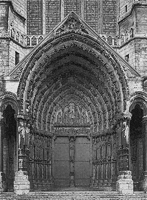
126 Pórtico del transepto norte de la catedral de Chartres, 1194.
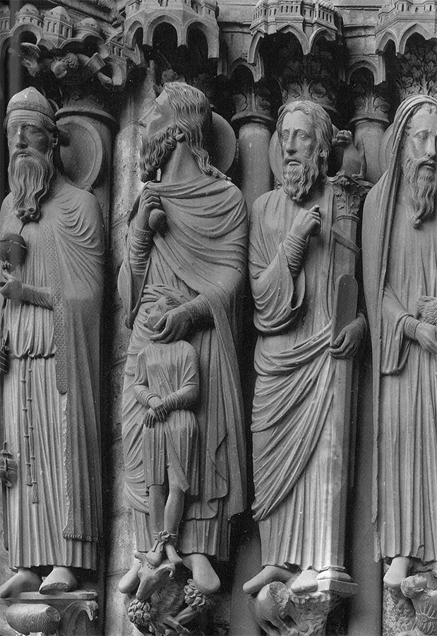
127 Melquisedec, Abraham y Moisés, 1194. Detalle de la ilustración 126.
La catedral de Chartres pertenece aún de lleno al siglo XII. Después de 1200, muchas nuevas y magníficas catedrales brotaron en Francia y también en países vecinos, como Inglaterra, España y las tierras germánicas del Rin. Muchos de los maestros empleados en los nuevos lugares aprendieron su arte mientras trabajaban en los primeros edificios de esta clase, pero todos ellos trataron de incrementar lo conseguido por sus mayores.
La ilustración 129, perteneciente a la catedral gótica de Estrasburgo, construida en el siglo XIII, muestra el criterio enteramente nuevo de esos escultores góticos. Representa el tránsito de la Virgen. Los doce apóstoles rodean su lecho; María Magdalena se arrodilla ante ella; el Cristo, situado en el centro, recibe el alma de la Virgen entre sus brazos. Observamos que el artista intenta aún conservar algo de la solemne simetría del período primitivo. Imaginamos que esbozó el grupo previamente para distribuir las cabezas de los apóstoles siguiendo la curva del arco, correspondiéndose entre sí los de cada lado, con la figura del Cristo en el centro. Pero ya no se contentaba con una pura distribución simétrica como la preferida por el maestro del siglo XII (ilustración 120). Manifiestamente, quiso que la vida respirara en sus figuras. Podemos ver la expresión de dolor en los bellos rostros de los apóstoles, con sus cejas levantadas y la mirada atenta. Tres de ellos se llevan las manos al rostro en el gesto tradicional de dolor. Más expresivos aún son el semblante y la figura de Magdalena, agachada a un lado y retorciéndose las manos, siendo maravilloso cómo ha conseguido el artista hacer que contrasten sus facciones con el mirar sereno y bienaventurado del rostro de la Virgen. Los ropajes ya no son las cáscaras vacías de ornamentación que vemos en las obras medievales primitivas. Los artistas góticos deseaban comprender la fórmula antigua de vestir los cuerpos, caída en desuso antes de ellos. Acaso trataron de instruirse volviendo los ojos a lo que había quedado de la escultura pagana, los sepulcros y los arcos triunfales, de los cuales podían verse varios en Francia. Así, recuperaban el clásico arte de mostrar la estructura del cuerpo bajo los pliegues del vestido. Nuestro artista, en efecto, está orgulloso de su capacidad para resolver esta dificultad técnica. La manera en que aparecen los pies y las manos de la Virgen, así como la mano del Cristo, bajo el vestido, nos muestra que esos escultores góticos ya no se interesaban tan sólo en lo que representaban, sino también en los problemas acerca de cómo representarlo. De nuevo, como en la época del gran despertar de Grecia, empezaron a contemplar la naturaleza, no tanto para copiarla como para aprender de ella a realizar figuras de aspecto convincente. Sin embargo, existe gran diferencia entre el arte griego y el gótico, entre el arte del templo y el de la catedral. Los artistas griegos del siglo V a.C. se interesaron principalmente en cómo construir la imagen de un cuerpo bello. Para el artista gótico, todos esos métodos y recursos no eran más que medios para un fin: representar su tema sagrado de la manera más emotiva y veraz posible. No plasmaba esto por sí mismo, sino por su mensaje y para el solaz y edificación que los fieles pudieran obtener de ello. La actitud del Cristo contemplando la muerte de la Virgen era manifiestamente más importante para el artista que la habilidad en interpretar los músculos.
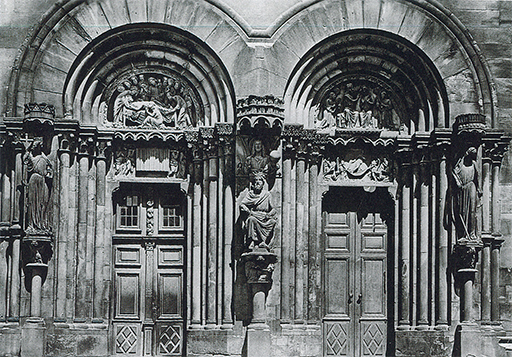
128 Pórtico del transepto sur de la catedral de Estrasburgo, h. 1230.
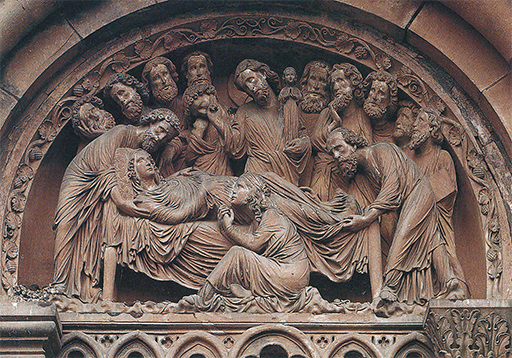
129 Tránsito de la Virgen. Detalle de la ilustración 128.
En el curso del siglo XIII, algunos artistas fueron aun más allá en sus intentos de vivificar la piedra. El escultor que emprendió la tarea de representar a los fundadores de la catedral de Naumburgo (Alemania), hacia 1260, casi nos permite creer que retrató a señores de su tiempo (ilustración 130). No es posible que en verdad lo consiguiera, pues esos fundadores habían muerto hacía muchos años y no eran más que nombres para el escultor. Pero las estatuas de hombre y mujer que hizo parecen estar listas para, en cualquier momento, descender de los pedestales e incorporarse a aquellos vigorosos caballeros y gentiles damas cuyas proezas y sufrimientos llenan las páginas de nuestros libros de historia.
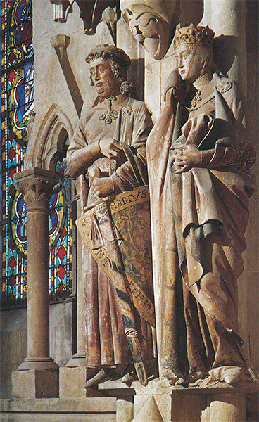
130 Ekkehart y Uta, h. 1260. De la serie de fundadores, en el coro de la catedral de Naumburgo.
Trabajar para las catedrales era la principal tarea de los escultores nórdicos del siglo XIII. La más importante labor de los pintores de aquel tiempo era iluminar manuscritos; pero el espíritu de esas ilustraciones fue muy diferente del de las páginas del solemne libro románico. Si comparamos La anunciación del siglo XII (ilustración 119) con la página de un salterio del siglo XIII (ilustración 131), nos daremos cuenta del cambio. Muestra el entierro del Cristo, análogo en tema y en espíritu al relieve de la catedral de Estrasburgo (ilustración 129). Una vez más advertimos cuán importante llegó a ser para el artista mostrarnos el sentimiento en sus figuras. La Virgen se inclina sobre el cuerpo yacente del Cristo y lo abraza, mientras san Juan entrecruza sus manos en gesto de dolor. Como en el relieve, vemos cuánto se esforzó el artista para encajar esta escena dentro de un esquema armónico: los ángeles, en las esquinas superiores, saliendo de las nubes con incensarios en sus manos, y los criados, con sus extraños sombreros puntiagudos —tal como los usaban los judíos en el medievo—, sosteniendo el cuerpo del Cristo. Esta expresión de emoción intensa, y esta distribución armónica de las figuras en la página, eran evidentemente más importantes para el artista que cualquier intento de hacer que pareciesen vivas o de representar una escena real. No le importó que las figuras de los criados fueran más pequeñas que las de los santos personajes, y no nos dio ninguna indicación del lugar o del momento. Comprendemos lo que está ocurriendo sin tales explicaciones externas. Aunque el propósito del artista no fue representar las cosas tal como las vemos en la realidad, su conocimiento del cuerpo humano, como el del maestro de Estrasburgo, fue, no obstante, infinitamente mayor que el del pintor de la miniatura del siglo XII.
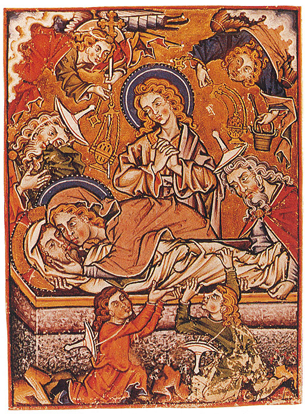
131 Entierro del Cristo, h. 1250-1300. Del salterio manuscrito de Bonmont; Biblioteca Municipal, Besançon.
En el siglo XIII, los artistas abandonaron accidentalmente los esquemas de los libros para representar temas porque les interesaban. Apenas podemos imaginar hoy lo que esto significó. Nos figuramos a un artista como una persona que con un libro de apuntes se pone a dibujar frente al natural aquello que le gusta. Pero sabemos que el aprendizaje y la educación de un artista medieval eran muy distintos. Empezaba siendo aprendiz de un maestro, al que acudía para instruirse y ocuparse de algunos pormenores del cuadro poco importantes. Gradualmente debía aprender cómo se representa un apóstol y cómo se dibuja a la Virgen. Aprendería a copiar y a adaptar de nuevo escenas de viejos libros, encajándolas en diferentes marcos, y acabaría finalmente por adquirir bastante facilidad en todo esto como para ser capaz de ilustrar una escena de la que no conociera ningún patrón. Pero nunca se hallaría en su carrera frente a la necesidad de tomar un libro de apuntes y dibujar algo en él tomándolo del natural. Hasta cuando se le requería para que representara a una persona determinada, al monarca reinante o a un obispo, no haría lo que nosotros llamaríamos un retrato parecido. En el medievo no existían tales retratos, de acuerdo con nuestro concepto. Todo lo que hicieron los artistas fue diseñar una figura convencional añadiéndole el emblema de su función —una corona y un cetro para el rey; una mitra y un báculo para el obispo— y quizá escribir el nombre debajo para que no hubiera error. Puede parecernos extraño que artistas que fueron capaces de realizar figuras tan llenas de vida como las de los fundadores de Naumburgo (ilustración 130) encontraran difícil lograr el parecido de una persona determinada. Pero la misma idea de situarse frente a una persona o un objeto y copiarlos les era ajena. Lo más notable es que, en ciertas ocasiones, artistas del siglo XIII hicieron algo, en efecto, según el natural. Lo hicieron así cuando no dispusieron de un patrón convencional del que fiarse. La ilustración 132 muestra una excepción semejante. Es la representación de un elefante dibujado por el historiador inglés Matthew Paris (†1259) a mediados del siglo XIII. Este elefante había sido enviado por san Luis, rey de Francia, a Enrique III, en 1255. Era el primero que se veía en Inglaterra. La figura del criado de perfil no es de un parecido muy convincente, aunque se nos da su nombre, Henricus de Flor. Pero lo interesante es que, en este caso, el artista estaba ansioso de señalar las proporciones exactas. Entre las patas del elefante hay una inscripción latina que dice: «Por el tamaño del hombre retratado, podéis imaginaros el de la bestia aquí representada.» Para nosotros este elefante es un poco raro, pero revela, a mi entender, que el artista del medievo, al menos en el siglo XIII, se daba cuenta perfectamente de las proporciones, y que si prescindía de ellas muy a menudo no era por ignorancia, sino simplemente porque no creía que importaran.
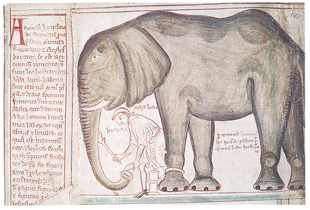
132 Matthew Paris, Un elefante y su cuidador, h. 1255. Dibujo de un manuscrito; Biblioteca Parker, Corpus Christi, Cambridge.
En el siglo XIII, la época de las grandes catedrales, Francia fue el país más rico y más importante de Europa. La Universidad de París fue el centro intelectual del mundo occidental. En Italia, un país con ciudades en guerra, las ideas y procedimientos de los grandes constructores de las catedrales francesas, tan apasionadamente imitados en Alemania e Inglaterra, no hallaron en un principio mucha respuesta.
Solamente en la segunda mitad del siglo XIII un escultor italiano comenzó a emular el ejemplo de los maestros franceses y a estudiar los métodos de la escultura clásica con objeto de representar la naturaleza con mayor veracidad. Este artista fue Nicola Pisano, que trabajó en el gran centro marítimo y comercial de Pisa. La ilustración 133 muestra uno de los relieves del púlpito que realizó en 1260. En un principio no es muy fácil ver lo que representa, porque Pisano siguió la práctica medieval de combinar varios temas dentro de un mismo cuadro. Así, el extremo de la izquierda del relieve está ocupado por el grupo de la anunciación, y el centro por el nacimiento del Cristo. La Virgen está echada sobre un escaño, san José agachado en una esquina, y dos criadas bañan al Cristo niño. Todos ellos parecen empujados por un hato de ovejas; pero éstas pertenecen en realidad a una tercera escena, la del anuncio hecho a los pastores, representada en la esquina derecha, donde el Cristo niño aparece otra vez en el pesebre. Si bien la escena parece un poco sobrecargada y confusa, el escultor, no obstante, procuró dar a cada episodio su lugar adecuado y sus más vivos pormenores. Puede verse cómo gozó plasmando detalles observados del natural, como el de la cabra de la esquina de la derecha rascándose la oreja con su pezuña; también, al observar de qué modo ha tratado los ropajes y los pliegues, se advierte cuánto debió de estudiar la escultura clásica y la cristiana primitiva (ilustración 83). Al igual que el maestro de Estrasburgo, que era de la generación anterior a él, o como el maestro de Naumburgo, que debe pertenecer aproximadamente a la misma época, Nicola Pisano aprendió el método de los antiguos para mostrar las formas del cuerpo bajo los ropajes y para hacer que sus figuras fueran, a la par, dignas y verosímiles.
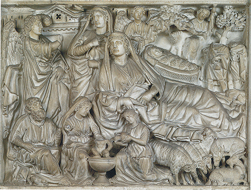
133 Nicola Pisano, Anunciación, natividad y pastores, 1260. Relieve en mármol del púlpito del baptisterio, Pisa.
Los pintores italianos fueron aun más lentos que los escultores en responder al nuevo espíritu de los maestros góticos. Las ciudades italianas, como Venecia, estaban en estrecho contacto con el Imperio bizantino, y los artistas miraban a Constantinopla más que hacia París en busca de inspiración y guía (ilustración 8). En el siglo XIII, las iglesias italianas aún se hallaban decoradas con solemnes mosaicos «a la manera griega».
Pudo parecer como si esta adhesión al estilo conservador de Oriente retrasara todo cambio, y en realidad así fue, pero cuando éste llegó, hacia finales del siglo XIII, fue este firme cimiento de la tradición bizantina el que permitió que el arte italiano no sólo empalmase con las producciones nórdicas de las catedrales, sino que revolucionase todo el arte de la pintura.
No debemos olvidar que el escultor que se proponía reproducir la naturaleza se daba a una tarea más fácil que la del pintor que se propusiera lo mismo. El escultor no tenía que preocuparse de crear una ilusión de profundidad por medio del escorzo o de los juegos de la luz con la sombra: la obra ejecutada por él se sitúa en un espacio y luz reales. Así pues, los escultores de Estrasburgo o Naumburgo podían alcanzar un grado de verismo que no le sería posible a ningún pintor del siglo XIII. Recordemos que el pintor nórdico había renunciado a toda pretensión de crear una ilusión de realidad; sus principios de composición y representación de un tema se hallaban dirigidos por muy otros propósitos.
Fue el arte bizantino el que, al fin, permitió que los italianos saltasen la barrera que separaba la escultura de la pintura. Dada su completa rigidez, el arte bizantino había conservado la mayoría de los descubrimientos de los pintores helenísticos, que sobrevivieron en la pintura-escritura de la edad de las tinieblas en Occidente. Recordemos cuántas de esas producciones yacían ocultas todavía, por decirlo así, bajo la fría solemnidad de una pintura bizantina como la de la ilustración 88, cómo se hallaba modelado el rostro por medio de la luz y la sombra, y cómo el trono y el escabel revelan una correcta comprensión de los principios del escorzo. Con medios de esta clase, un genio que rompiera el hechizo del conservadurismo bizantino podría aventurarse por un nuevo mundo, trasladando a la pintura las figuras llenas de vida de la escultura gótica. Este genio lo halló el arte italiano en el florentino Giotto di Bondone (h. 1267-1337).
Es costumbre comenzar un nuevo capítulo con Giotto; los italianos están convencidos de que una época enteramente nueva del arte comenzó con la aparición del gran pintor. Veremos que tienen razón; pero, no obstante, convendrá recordar que en la verdadera historia no existen capítulos nuevos ni nuevos comienzos, y que no disminuimos en nada la grandeza de Giotto si advertimos que sus métodos deben mucho a los maestros bizantinos, y sus propósitos y perspectivas a los grandes escultores de las catedrales nórdicas.
Las obras más famosas de Giotto son sus pinturas murales o frescos (así llamadas por tenerse que pintar sobre la pared cuando el estuco todavía está fresco, es decir, húmedo). Entre 1302 y 1303 cubrió los muros de una pequeña iglesia de Padua, en el norte de Italia, con temas extraídos de las vidas de la Virgen y del Cristo. Debajo, pintó personificaciones de las virtudes y los vicios, semejantes a las que ya habían sido colocadas en los pórticos de las catedrales nórdicas.
La ilustración 134 muestra la representación de la fe por Giotto como una matrona con una cruz en una mano y un pergamino en la otra. Es fácil observar la similitud de esta noble figura con las obras de los escultores góticos. Pero no es una estatua; es una pintura que da la sensación de estatua. Vemos el escorzo de los brazos, el modelado del rostro y del cuello, las profundas sombras en los flotantes pliegues del ropaje. No se había hecho nada semejante desde hacía mil años. Giotto redescubrió el arte de crear la ilusión de la profundidad sobre una superficie plana.
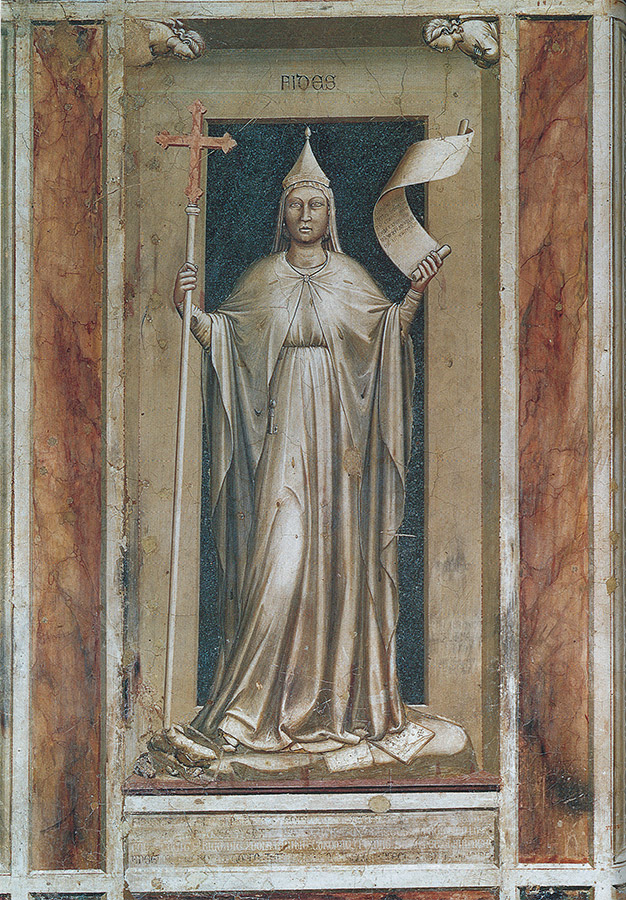
134 Giotto di Bondone La fe, h. 1305. Detalle de un fresco; capilla Dell’Arena, Padua.
Para Giotto, este descubrimiento no fue solamente un recurso valedero por sí mismo. Le permitía cambiar todo el concepto de la pintura. En lugar de emplear los procedimientos de la pintura-escritura, podía crear la ilusión de que el tema religioso pareciese estar acaeciendo delante de nuestros mismos ojos. Para ello ya no bastó con mirar representaciones más antiguas de la misma escena y adaptar esos modelos venerados al nuevo empleo. Siguió más bien la opinión de los frailes que exhortaban al pueblo en sus sermones a que representaran en sus mentes lo que leían en la Biblia o en las leyendas de los santos como si lo estuvieran viendo, tal, por ejemplo, la Sagrada Familia del carpintero al huir a Egipto, o al Cristo clavado en la cruz. Giotto no descansó hasta haber desarrollado todo esto en sus frescos: ¿cómo aparecería un hombre, cómo se movería, cómo actuaría si tomara parte en un suceso de tal índole? Además, ¿cómo se mostraría tal ademán o movimiento a nuestros ojos?
Podemos medir mejor el alcance de esta revolución si comparamos uno de los frescos de Giotto en Padua (ilustración 135) con un tema similar en la miniatura perteneciente al siglo XIII de la ilustración 131. El tema es el del dolor ante el cuerpo yacente del Cristo, con la Virgen abrazándole por última vez. En el arte de la miniatura, como recordamos, el artista no estaba interesado en representar la escena tal como pudo haber ocurrido. Alteró el tamaño de las figuras para que encajaran bien dentro de la página, y, si tratamos de imaginar el espacio entre las figuras del primer término y la de san Juan, que se halla al fondo —con el Cristo y la Virgen en medio—, advertimos que todo está como amontonado y que el artista se preocupó muy poco del espacio. La misma indiferencia respecto al espacio real en donde está acaeciendo la escena llevó a Nicola Pisano a representar episodios diferentes dentro del mismo cuadro. El método de Giotto es por completo diferente. La pintura es, para él, algo más que un sustituto de la palabra escrita. Nosotros parecemos atestiguar el hecho real como si participásemos en la escena misma. Compárese el convencional gesto del angustiado san Juan de la miniatura con el apasionado movimiento del san Juan de la pintura de Giotto, inclinándose hacia adelante, con los brazos extendidos. Si aquí tratamos de imaginar la distancia entre las figuras agachadas en el primer término y san Juan, inmediatamente nos damos cuenta de que hay aire y espacio entre ellas y que pueden moverse con holgura. Estas figuras del primer término revelan cuán enteramente nuevo era el arte de Giotto en cualquier aspecto. Recordemos que el arte cristiano primitivo volvió a la vieja idea oriental de que, para plasmar claramente un tema, era preciso que cada figura fuera mostrada íntegramente, casi como en el arte egipcio. Giotto abandonó este criterio, pues no necesitaba de semejantes artificios, mostrándonos tan convincentemente cómo se reflejaba en cada figura la aflicción por la trágica escena que hasta la advertimos en aquellas cuyos rostros se nos ocultan.
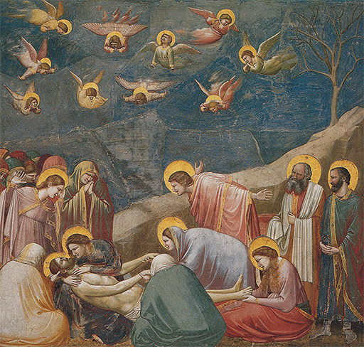
135 Giotto di Bondone, El entierro del Cristo, h. 1305. Fresco; capilla Dell’Arena, Padua.
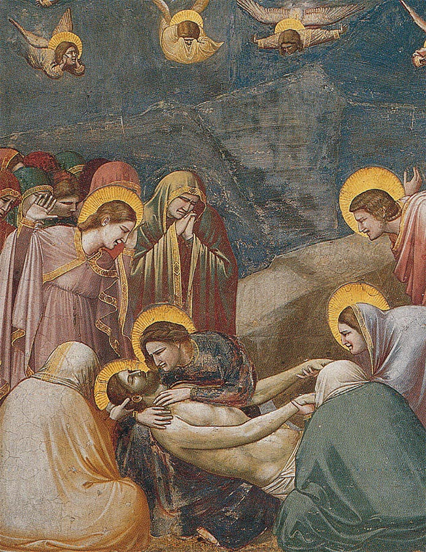
136 Detalle de la ilustración 135.
La fama de Giotto se difundió por todas partes. Los florentinos estaban orgullosos de él, se interesaban por su vida y referían anécdotas relativas a su ingenio y habilidad. Esto constituyó también una gran novedad, pues antes no ocurría nada parecido. Naturalmente que existieron maestros que gozaron de general estimación y que fueron recomendados de unos monasterios a otros, o de un obispo a otro. Pero, en conjunto, nadie pensaba que fuera necesario conservar los nombres de esos maestros para la posteridad. Eran para las gentes de entonces lo que para nosotros el ebanista o el sastre. Incluso los propios artistas no se hallaban muy interesados en adquirir fama o notoriedad. Por lo general, ni siquiera firmaban sus obras. Ignoramos los nombres de los maestros que realizaron las esculturas de Chartres, Estrasburgo o Naumburgo. Sin duda, fueron apreciados en su época, pero su gloria se la confirieron a la catedral para la que trabajaron. En este aspecto, también, el pintor Giotto inició un nuevo capítulo en la historia del arte. A partir de entonces, ésta, primero en Italia y después en los demás países, es la historia de los grandes artistas.
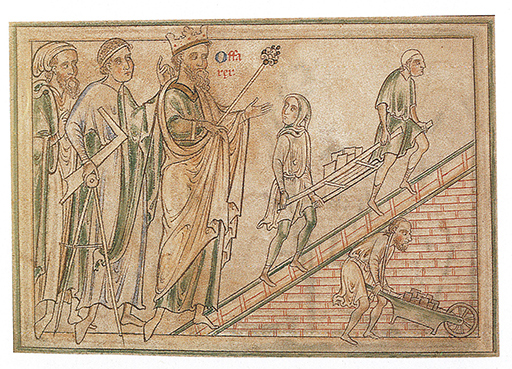
Matthew Paris, El rey y su arquitecto (con escuadra y compás) visitando la construcción de una catedral (rey Offa en St. Alban), h. 1240-1250. Dibujo en una crónica de la abadía de St. Alban; Trinity College, Dublín.